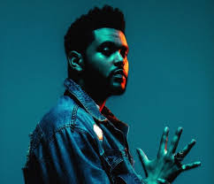

The Weeknd
أبيل تسفاي أيضاً يُعرف باسم المسرح ذا ويكند هو مغني وكاتب ومنتج كندي. لاحقاً في عام 2010 تسفاي قام برفع فيديوهات لأغانيه على موقع يوتيوب تحت اسم ذا ويكند. ولقد أصدر ثلاثة مزيج أشرطة لاحقاً طوال عام 2011: "بيت البالون" و "يوم الخميس" و "أصداء الصمت". ولقد كانت الانتقادات لاذعة. في السنة التالية أصدر ألبوم تجميعي بعنوان "ثلاثي" يحتوي على جميع أغاني الميكس تيب مع إعادة إصدار لبعض الأغاني، ولقد صدرت تحت اسم شركة الإنتاج ريببلك و شركة الإنتاج الخاصة به إكس أو. في عام 2013 لقد قام بإصدار ألبوم إستديو باسم "أرض القُبلة". ولقد كان مدعوم من قبل أغنيتين منفردتين "أرض القُبلة" و "عش من أجل".